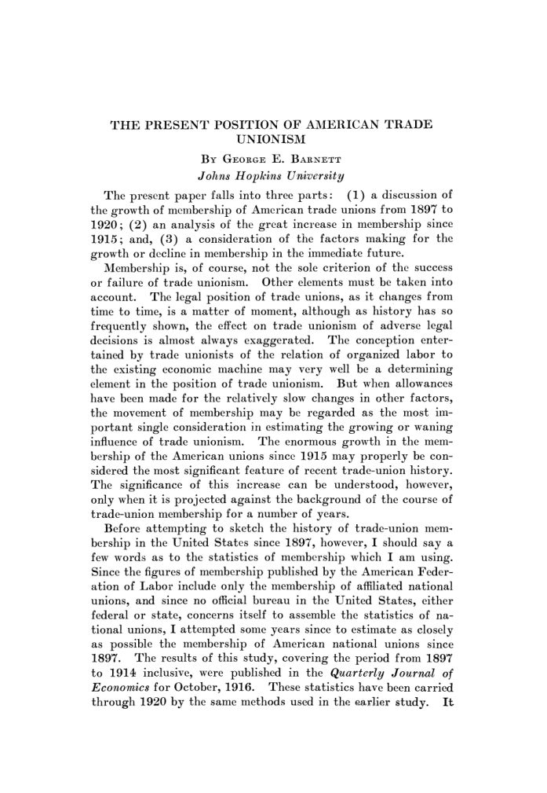

Barnett, 1921: o sindicato depois do salto da guerra
Leitura: 8 min
Barnett reconstrói a filiação sindical americana desde 1897 e mostra que o salto para quase cinco milhões de membros veio das indústrias de guerra e das ferrovias, sob proteção do governo.


Em 1920, os sindicatos americanos tinham pouco menos de cinco milhões de membros, quase o dobro do que tinham em 1915. Na manhã de 28 de dezembro de 1921, em Pittsburgh, em plena depressão, George E. Barnett, da Johns Hopkins University, perguntou quanto daquilo resistiria. Sua resposta partiu da única medida que considerava capaz de indicar a influência crescente ou minguante do sindicalismo: o número de filiados.
Por que contar membros?
Barnett reconhece que a filiação não é o único critério de sucesso. A posição legal dos sindicatos importa, embora, diz, o efeito de decisões judiciais adversas quase sempre seja exagerado. A visão que os sindicalistas têm de sua relação com a máquina econômica também pode ser decisiva. Mas esses fatores mudam devagar, e o movimento da filiação seria a consideração isolada mais importante.
O problema era que ninguém contava. A American Federation of Labor só publicava a filiação de seus sindicatos nacionais afiliados, e nenhum órgão oficial, federal ou estadual, reunia as estatísticas. Barnett fizera ele mesmo uma estimativa de 1897 a 1914, publicada no Quarterly Journal of Economics em outubro de 1916, e a estendeu até 1920 pelos mesmos métodos. Os números incluem os membros canadenses dos sindicatos internacionais e excluem os sindicatos locais independentes dos Estados Unidos; como as duas parcelas são aproximadamente iguais, a série representaria bem o país, e o movimento relativo estaria correto de qualquer forma, porque a filiação canadense seguira quase exatamente a americana.
Como cresceu o sindicalismo desde 1897?
Barnett divide a história em quatro períodos. De 1897 a 1904, a filiação subiu todos os anos, de meio milhão para mais de dois milhões. De 1904 a 1910, oscilou em torno de dois milhões, sem tendência. De 1910 a 1913, subiu de dois milhões para quase 2,75 milhões, movimento revertido em 1914 pela depressão e pela guerra; em 1915, estava em cerca de 2,5 milhões. A partir de 1915 veio um grande salto, que não perdeu força com o armistício e seguiu até 1920.
Daí duas conclusões. A primeira é que o aumento desde 1915 não tinha precedente: só de 1897 a 1903 houvera alta percentual comparável em período igual, e nunca um aumento tão grande em números absolutos. A segunda é que, até então, a perda de membros nunca passara de 10%, mesmo em depressões longas. Se a história se repetisse, o sindicalismo entraria na próxima prosperidade com uma parte da classe trabalhadora muito maior do que jamais tivera. Mas as condições do salto, adverte, eram únicas.
Onde estava o crescimento?
Para saber se o aumento se espalhou por todas as indústrias, Barnett compara 1920 com 1913, outro ano de pico, porque a comparação com 1915 exageraria o ganho. Divide os sindicatos em quinze grupos, aproximação imperfeita, já que os maquinistas, por exemplo, ficam todos em metalurgia embora muitos trabalhem em oficinas ferroviárias. Em cinco grupos, o aumento foi desprezível: mineração, alimentos e fumo, teatros e música, química e vidro, e madeira. Em outros cinco, como têxteis, couro e serviço público, houve altas percentuais grandes, mas sobre bases pequenas, que somaram 300 mil membros, menos de um sétimo do total.
Os quatro grupos restantes, construção, metalurgia e construção naval, vestuário e transporte, responderam por 1,8 milhão dos 2,25 milhões de novos membros. Desses, cerca de 700 mil estavam no transporte, e parte do ganho atribuído à construção e à metalurgia também pertencia a ele. Barnett estima que um milhão do aumento estava no transporte e uns 700 mil nas ferrovias, onde o grande salto ocorrera depois de 1918. O ganho de 1919 para 1920, o maior de todos os anos, deveu-se sobretudo a elas.
Por que as ferrovias seriam diferentes?
Nos quatro grupos que puxaram o crescimento, as indústrias de guerra por excelência, a intervenção do governo para manter a paz industrial estimulou a filiação. Essa intervenção acabou em todos eles, menos no transporte. Barnett admite efeitos duradouros, como talvez no vestuário, e cita a restrição à imigração como possível reforço, mas não vê razão para resultados permanentes fora das ferrovias. Nelas, o sistema de fixação judicial de salários e condições criado pela Esch-Cummins Act parecia permanente.
O controle governamental contínuo protege os sindicatos ferroviários de duas formas. Na depressão, não há como criar oficinas sem sindicato nem desviar trabalho para não filiados; a perda por desemprego é recuperável. E ele estendeu a todos os grupos regras que já atraíam membros. As irmandades dos trens, mais necessárias à operação, tinham conquistado o direito de se organizar e negociar; o governo e o Labor Board deram esse direito a todos os empregados. Mais importante, as irmandades conseguiram filiar uma proporção dos homens de seus ofícios maior que qualquer sindicato de tamanho comparável, sem loja fechada, graças a cláusulas de disciplina e promoção que dão a cada membro um interesse pessoal na ação do sindicato.
Aqui Barnett formula uma regra geral. O desejo de subir salários ou reduzir jornadas é um desejo de massa e se mostrou mais fraco que o de resistir a demissão injusta ou discriminação. Muitos deixam aos colegas a negociação do que beneficia o grupo inteiro, mas poucos deixam de agir quando o fim é individual. O mineiro que espera brigar com o patrão sobre trabalho não pago se filia, mesmo que não o fizesse só pela tabela salarial. Os acordos nacionais com a administração ferroviária mantiveram essas cláusulas, e por isso seriam uma força poderosa para segurar membros.
O que esperar da deflação?
Fora das ferrovias, a perspectiva é muito menos promissora. Afora a perda direta pelo desemprego, a maior dificuldade para reter membros é reajustar os salários ao nível geral de preços, e a queda rápida e grande dos preços era um problema de grau inédito. O caso mais próximo, a deflação depois da Guerra Civil, não ajudava, porque o sindicalismo era então pouco importante. Os relatórios disponíveis indicavam que a queda de filiação, exceto nas ferrovias, superaria em muito a dos períodos anteriores. O tamanho da perda dependeria da habilidade tática dos dirigentes.
“Os sindicatos funcionam melhor sob um regime de preços estáveis.” (“Trade unions function best under a regime of static prices.”)
Os sindicatos protegidos por contratos de arbitragem de longo prazo tinham menos a temer. Os demais teriam de decidir sobre salários pesando duas coisas: a capacidade de resistir, diante da concorrência não sindicalizada e da substituição de membros, e o efeito da mudança salarial sobre o emprego. Sobre nenhuma das duas havia informação minimamente exata. Mais importante ainda, diz Barnett, era a relutância dos sindicatos, sobretudo da base, em guiar sua política só por considerações competitivas.
“adotou como princípio dominante a máxima de que o trabalho não é uma mercadoria” (“it has adopted as its ruling principle the dictum that labor is not a commodity”)
Barnett diz não discutir se o princípio é correto, mas observa que é difícil agir por ele num período de preços em queda e, ao mesmo tempo, manter intacta a força dos sindicatos. A tabela anexa dá a filiação de cada sindicato nacional de 1915 a 1920, agrupada pelas mesmas indústrias.
Na discussão, David A. McCabe, de Princeton, concordou que a queda seria muito maior que 10%, mas achou que até os sindicatos ferroviários de oficinas e de ofícios diversos perderiam, porque as juntas nacionais de ajuste não tinham sido restabelecidas. Noel Sargent, da National Association of Manufacturers, partiu da observação de Barnett sobre a política não competitiva dos sindicatos para defender a loja aberta.
Na minha leitura
Na minha leitura, o texto é um bom exemplo de como uma série estatística feita à mão pode sustentar uma previsão. Barnett não tem dados oficiais; constrói a série, explica seus vieses e mostra por que eles não afetam o movimento relativo. Em seguida decompõe o crescimento por indústria e chega a uma tese verificável: o salto dependeu de intervenção do governo, e onde ela acabou a filiação deveria recuar.
A segunda contribuição é a explicação do que segura um membro no sindicato. Ao separar os benefícios coletivos, que todos recebem filiados ou não, dos benefícios individuais, como a defesa contra demissão, Barnett antecipa a questão de incentivos que mais tarde seria discutida como o problema do carona.
Glossário
- Sindicato nacional
- organização que reúne os sindicatos locais de um ofício ou indústria em todo o país; os internacionais incluem o Canadá.
- Irmandades ferroviárias
- sindicatos tradicionais das tripulações de trens, como maquinistas e condutores.
- Loja fechada (closed shop)
- estabelecimento que só emprega membros do sindicato.
- Esch-Cummins Act
- nome da Transportation Act de 1920, que devolveu as ferrovias aos donos e criou o Railroad Labor Board.
- Fixação judicial de salários
- determinação de salários por um órgão com função de tribunal, em vez de negociação direta.
- Trabalho não pago (deadwork)
- na mineração, tarefas auxiliares que não entram no pagamento por tonelada e geram disputas.
Fontes
- The Present Position of American Trade Unionism — George E. Barnett (Johns Hopkins University) (pp. 44–55). JSTOR · Internet Archive (PDF)
- Edição completa, com os demais artigos: Nº 175 do Arquivo.
Documento em domínio público (EUA, publicado antes de 1931), via JSTOR Early Journal Content e Internet Archive. Resumo e comentário do autor deste site, sem afiliação com a American Economic Association. Encontrou um erro? Escreva: a correção é publicada no próprio texto, com data.
← Mitchell, 1921: dá para domar o ciclo econômico? ↑ Nº 175 · Pittsburgh, 1921: a crise de 1920 e a ambição de domar o ciclo